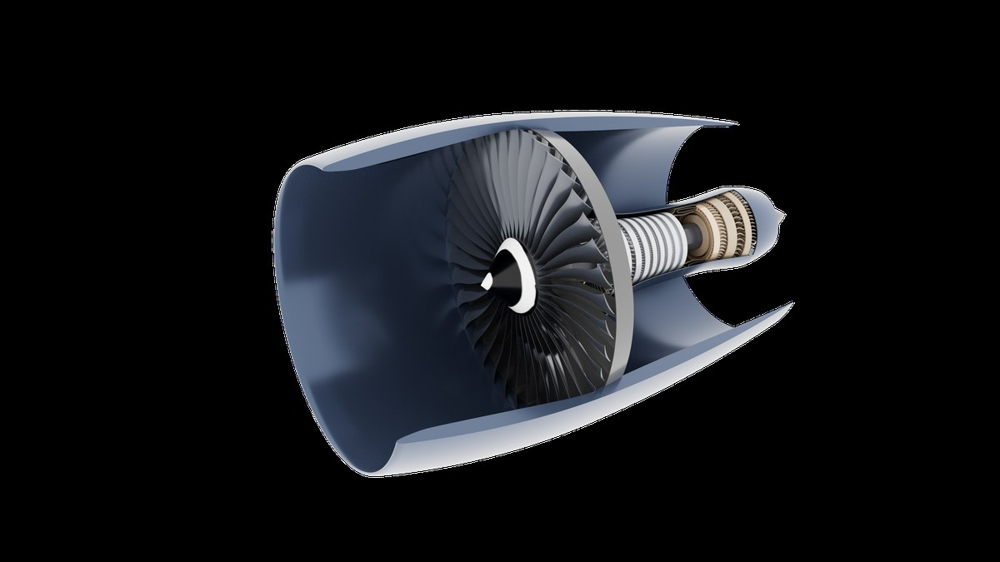
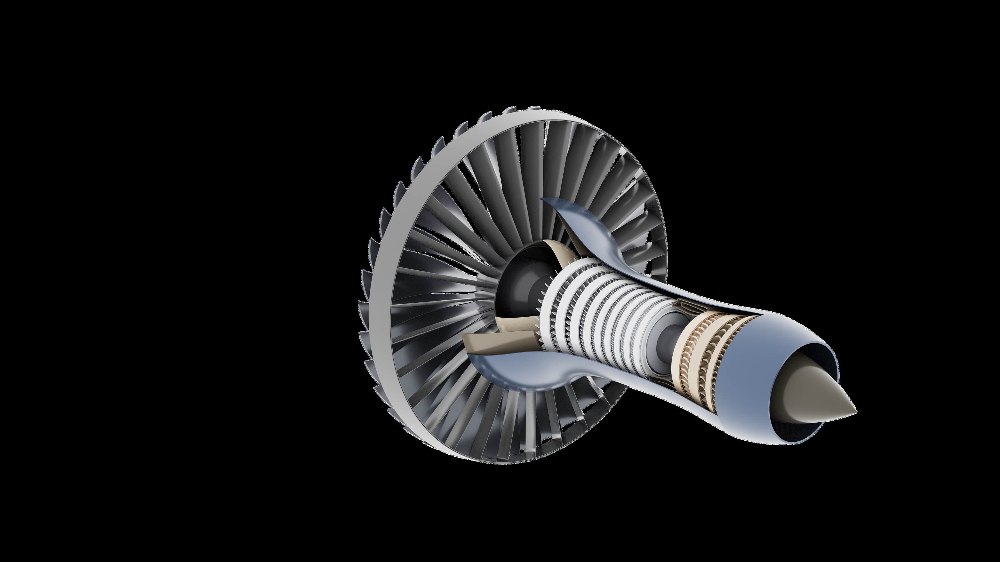
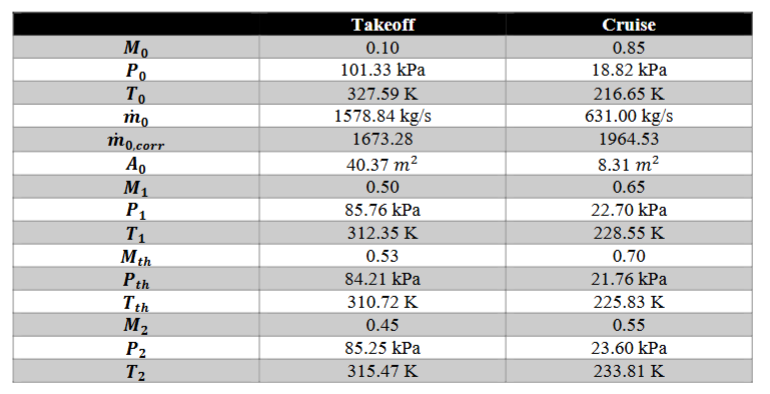
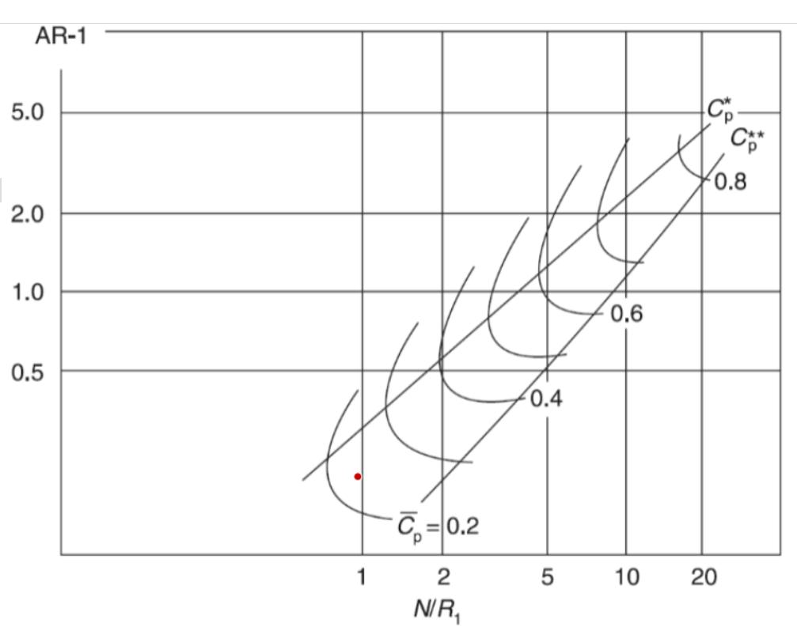
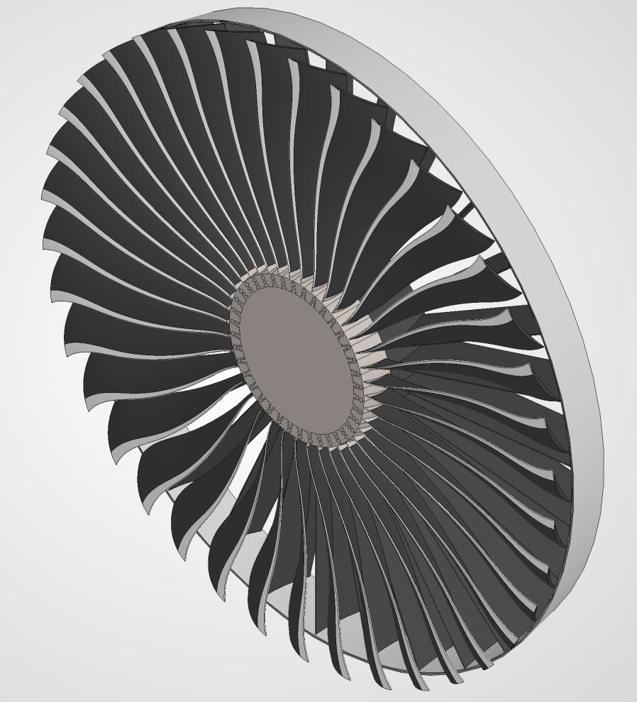
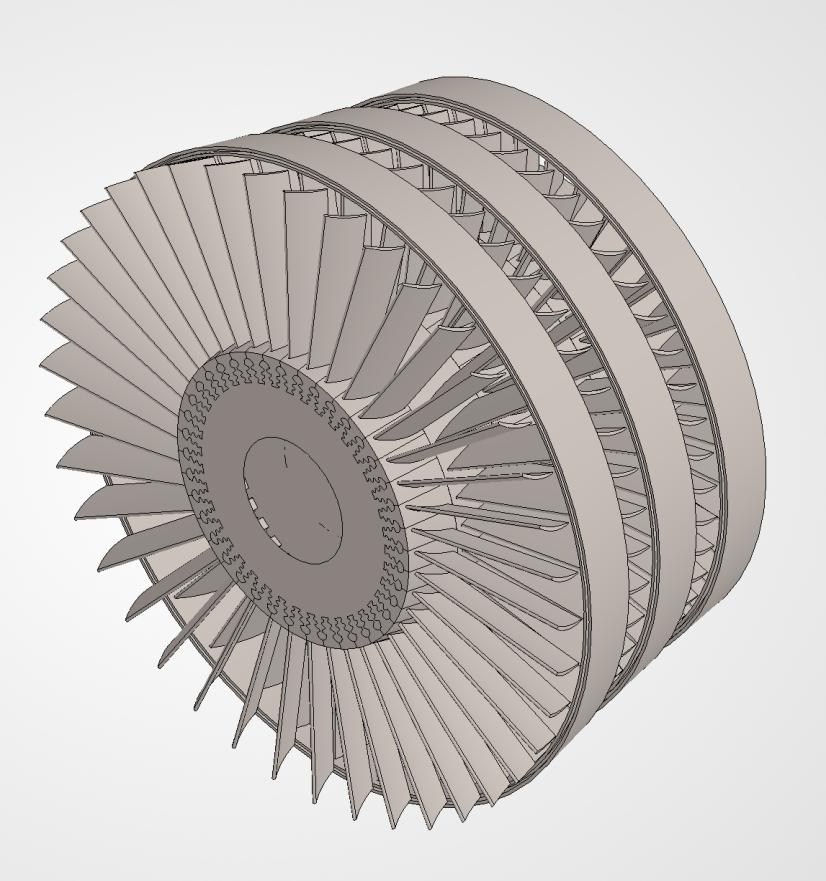
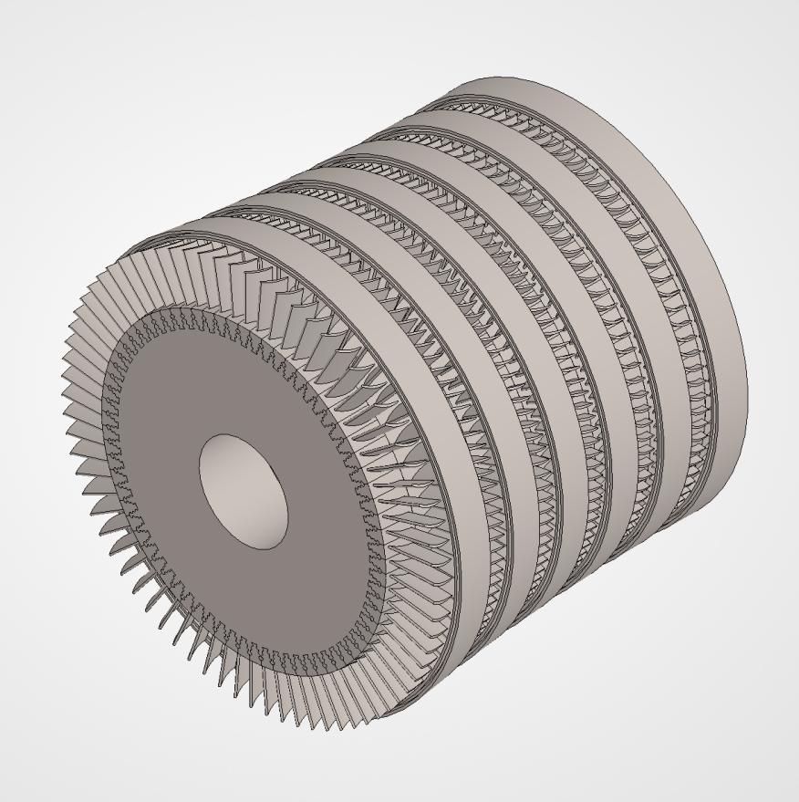
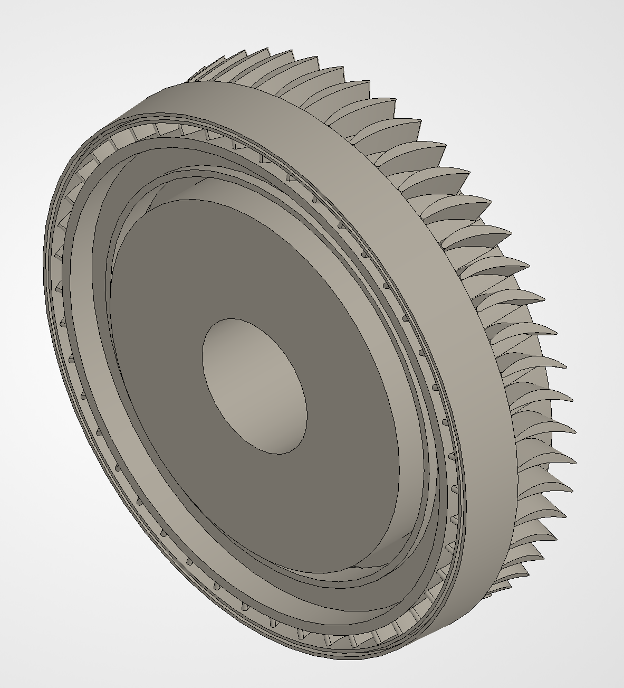
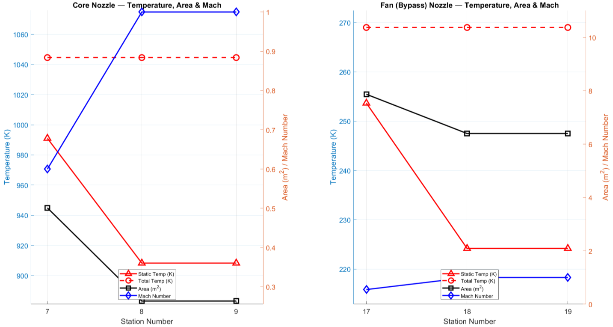
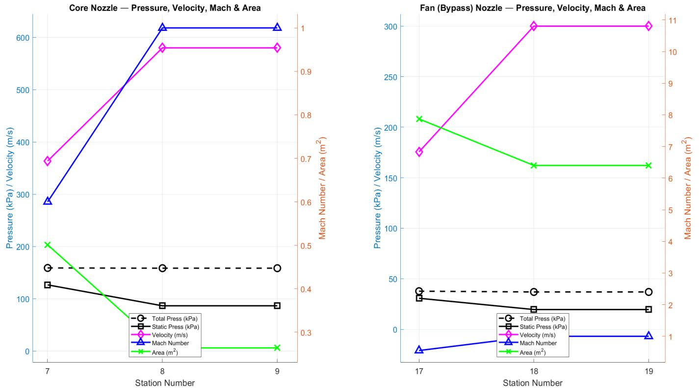

AE 440 · Jet Propulsion Detail Design · Spring 2026 · ERAU
Role
Team Lead — Inlet & Turbomachinery Design
AE 440: Jet Propulsion Detail Design · ERAU · Spring 2026
Tools
MATLAB · AEDsys · Excel · ONX
CAD (SolidWorks) · 3ds Max · Sovran & Klomp Diffuser Maps
Key Contributions
The ER-18 airlifter demands a propulsion system that can produce high thrust for short-runway hot-day takeoffs while maintaining competitive fuel efficiency across long-duration cruise and loiter missions. For AE 440, our four-person team designed the Atlas-85X — a high-bypass, separate-exhaust, geared turbofan (non-afterburning) — from cycle analysis through full component detail design. The engine is sized to power a 1,000,000 lb MTOW airlifter with a 6,940 nm range and flat-rated performance off a 5,400 ft runway.
The primary design challenge was balancing the competing demands of high sea-level thrust and efficient high-altitude cruise. Key choices — an 11:1 bypass ratio, a 55:1 overall pressure ratio, and a 3.2:1 planetary gearbox decoupling the fan from the LP spool — were all driven by that trade. A custom MATLAB cycle tool was developed and cross-validated against AEDsys at every station, confirming less than 1% deviation across all thermodynamic quantities before any component design began.


The cycle was analyzed as a modified Brayton cycle with a separate bypass stream. Two operating conditions governed the design: the design point at 2,134 m / M 0.82, and takeoff at sea level / M 0.10. I built the MATLAB cycle tool to iterate over component efficiencies, pressure ratios, bypass ratio, and cooling bleeds simultaneously, then verified every station total temperature and total pressure against AEDsys outputs. Agreement was within 1% at all stations — confirming the tool was reliable before it was used to bound the turbomachinery design.
Key cycle parameters driving downstream design:
The h-s diagrams confirmed physically consistent behavior at every stage: low entropy rise through the compressors, large constant-pressure enthalpy addition through the combustor, and smooth work extraction across the turbines. The bypass stream shows only the small enthalpy rise across the fan, confirming the fan is lightly loaded relative to the core cycle.

The axisymmetric subsonic diffuser was designed to deliver uniform, low-distortion flow to the fan face while preserving as much total pressure as possible at both flight regimes. A key finding during inlet iteration was that the corrected mass flow demand at cruise exceeded that at takeoff — an inversion from typical expectation driven by the significant thrust lapse at altitude. As a result, the throat was sized for cruise (Mth = 0.70) rather than takeoff, preventing aerodynamic choking at the dominant operating condition.
Design parameters determined through Sovran & Klomp diffuser map iteration:
The 4% total pressure loss (from the ideal 0.998 assumption to the realized 0.960) was a deliberate compromise: positioning the design point near the maximum Cp contour within the stable diffuser operating domain, trading a small thermodynamic penalty for robust off-design margin.

The turbomachinery forms the core of the engine and represents the majority of the design effort. All components were designed using mean-line velocity triangle analysis, with hub and tip solutions verified at three radii. The guiding philosophy was to minimize total stage count — accepting moderate deviations in loading and flow coefficients — in exchange for reduced weight, shorter engine length, and lower system complexity. The GE90 uses 13 compressor stages and 8 turbine stages; the Atlas-85X achieves comparable performance with 9 compressor stages and 3 turbine stages.
The fan operates at 2,200 RPM through a 3.2:1 planetary gearbox decoupled from the 7,000 RPM LP spool. The gearbox avoids the structural and efficiency penalties of running the large-diameter fan at LP-spool speed, while keeping the transition duct between fan and LPC short. With 38 rotor blades and 30 stator vanes, the fan achieves a pressure ratio of 1.30 and delivers 582 kg/s bypass flow. De Haller numbers of 0.77 (rotor) and 0.89 (stator) confirm adequate stall margin; the degree of reaction spans 0.40 at the hub to 0.95 at the tip.

The LPC rotates at 7,000 RPM on the LP spool and compresses 53 kg/s of core flow from the fan exit to an LPC pressure ratio of 3.5. Blade heights taper from 24 cm at stage 1 to 13 cm at stage 3, with a mean blade speed of 275 m/s. All three stages maintain De Haller numbers above 0.74 and diffusion factors below 0.43. Low rotor diffusion factors across all stages indicate lightly loaded rotors with high stall margin. A smooth meridional profile was essential since the LPC exit directly feeds the HPC inlet geometry.

The HPC on the 13,000 RPM HP spool performs the primary compression, delivering an HPC pressure ratio of 15.7. Blade height collapses from 8 cm at stage 1 to 1 cm at stage 6 as flow density rises; blade speed reaches 495 m/s at the meanline. The first stage operates at a stage pressure ratio of ~1.95, deliberately front-loaded to allow downstream stages to ease progressively to ~1.37 at the last stage. This front-loading strategy, combined with 60–110 blades per stage, allowed the HPC to achieve 15.7:1 in six stages where reference engines require nine to eleven. De Haller numbers hold above 0.75 and diffusion factors below 0.38 across all six stages.

The HPT receives flow directly from the combustor at 1,778 K and extracts 26.8 MW to drive the HPC. With an isentropic efficiency of 0.96, a single stage is sufficient: the stage loading coefficient of 2.0 is high but within acceptable turbine limits for modern designs. The LPT operates at 7,000 RPM and extracts 18.9 MW across two stages to drive both the LPC and (through the gearbox) the fan. LPT blade heights grow from 9 cm to 15 cm as flow expands through the turbine. The three-stage turbine total compares to eight stages in the GE90/GE9X — a substantial complexity and weight reduction.

An annular combustor was selected for its compact geometry, uniform exit temperature distribution, and efficient mixing characteristics. Inlet conditions from the HPC exit (Pt3 = 1,593 kPa, Tt3 = 873 K) are raised to the turbine inlet target (Pt4 = 1,530 kPa, Tt4 = 1,778 K), with the combustor sustaining only a 4% pressure drop — within modern design limits. Geometry was scaled from the TF39 annular combustor reference, then sized to provide a residence time of 0.01 s for complete combustion. The final dimensions (L = 0.41 m, D = 0.67 m, L/D = 0.62) produce a compact, low-weight combustor consistent with the overall design philosophy.
Both the core and bypass streams use convergent-only nozzles. A trade study evaluated whether a convergent-divergent (CD) nozzle was justified for the core stream at NPR = 8.44, which theoretically yields a ~7.7% core gross thrust gain. However, with bypass ratio 11, the core produces only 21% of total gross thrust — reducing the effective whole-engine thrust improvement to just 1.6%, well below the threshold that justifies the added weight and length. The bypass nozzle operates at NPR = 2.00 with a thrust ratio of 1.00; no diverging section provides benefit at this pressure ratio.
Cruise performance summary (M 0.85, 12,192 m):


The engine achieves thrust and TSFC comparable to the GE90 and GE9X while using significantly fewer stages: 9 total compressor stages vs. 13–14, and 3 turbine stages vs. 8 in the benchmark engines. The trade-off is a moderate reduction in peak isentropic efficiency, accepted in exchange for lower weight, shorter axial length (6.63 m inlet to nozzle cone), and reduced mechanical complexity.
Cycle Validation Before Design
Building and validating the MATLAB cycle tool against AEDsys (<1% error) before any component design began was the single decision that kept all boundary conditions internally consistent. Changes propagated correctly through every downstream component.
Stage Count as a Design Variable
Treating stage count as a primary design input — not an outcome — drove every turbomachinery tradeoff. Accepting moderately elevated loading while keeping De Haller ≥ 0.74 everywhere allowed the 9+3 stage layout: structurally lighter and mechanically simpler than benchmark engines.
Gearbox Enables Fan Efficiency
Decoupling the 3.65 m fan (2,200 RPM) from the LP spool (7,000 RPM) via a 3.2:1 planetary gearbox was essential to keep fan tip Mach numbers subsonic and maintain a single-stage fan. It also minimized the fan-to-LPC transition duct length and its associated total pressure losses.
Nozzle Trade: CD Not Justified at BPR 11
A quantitative trade study showed that a CD core nozzle yields only ~1.6% whole-engine thrust improvement despite a 7.7% core-only gain — because the bypass stream dominates gross thrust at high bypass ratios. This system-level thinking prevented over-engineering a single component at the expense of overall design simplicity.